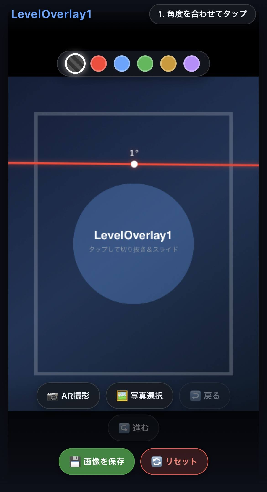
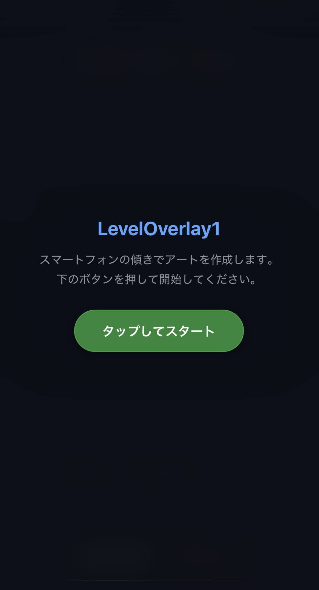
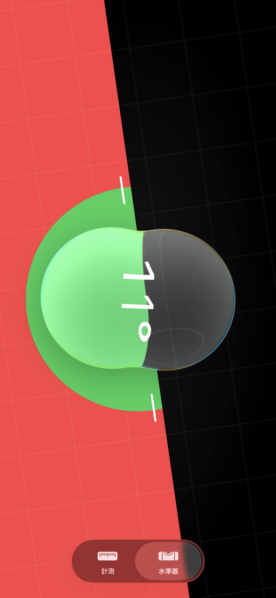
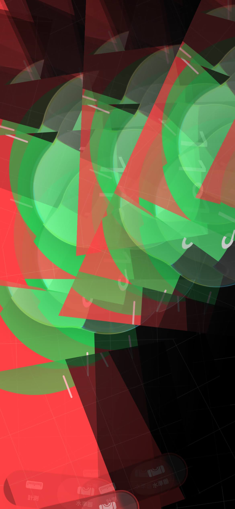

STAGE 01 // OVERVIEW
新規アプリ「LevelOverlay1」を体験しよう
水準器 × 傾斜 × 画像。角度を感知する次世代の画像合成アプローチ。

STAGE 02 // INTELLIGENT UI
スタイリッシュで近未来的な操作感
スマホの傾きに合わせて直感切り貼り。色彩の変容や高解像度保存もお手の物。

STAGE 03 // UPGRADE VISION
この水準器画像をもっとかっこよくしたい！
日常の測定ビューを、映画のUIのようなエッジの効いたアートピースへ昇華。

STAGE 04 // LIVE DEMO
一度タップで切り抜き、もう一度で貼り付け
余計なメニューは一切なし。手元のジェスチャーと連動する直感カンタン操作。
STAGE 05 // YOUR TURN
さぁ、つぎはあなたの番です！

水準器による画像再構築で、日常を超えた最高の体験を。